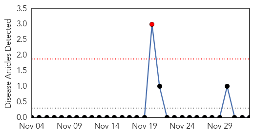

Ebola
30-Day Web Trend
0 alerts, 0 warnings

30-Day Twitter Trend
2 alerts, 0 warnings
Article Locations

Article Confidences

Top Articles:
- 1.000
- Mass General's Suspected Ebola Case was Malaria
- 1.000
- Viewpoint: Let’s deal with real Ebola facts
- 1.000
- More U.S. hospitals equipped for Ebola patients
- 1.000
- Spain officially free of Ebola
- 1.000
- Massachusetts hospital says treating possible Ebola patient
- 1.000
- Ebola cases top 17,000; activity still intense in Sierra Leone
- 1.000
- Here’s What We Don’t Know About the Suspected Ebola Case at MGH (And What We Do)
- 1.000
- Mali free of Ebola, president says, as virus spreads in West Africa
- 1.000
- MGH Confirms Patient Has Malaria, Not Ebola « CBS Boston
- 1.000
- Follow Nigeria, Pakistan – The Express Tribune Blog
- 0.999
- Mali confirms eighth Ebola case, monitoring 271 people
- 0.999
- General Health Systems Damaged by Ebola in West Africa
- 0.999
- No more Ebola cases in Mali, says president
- 0.999
- Healthcare worker monitored for Ebola in US
- 0.999
- WHO 'wasted precious time' over Ebola – expert
- 0.999
- WHO 'wasted precious time' over Ebola
- 0.999
- Mali confirms eighth Ebola case, monitoring 271
- 0.999
- Eleventh Doctor Infected With Ebola in Sierra Leone
- 0.999
- Health System Resilience Reflections on the Ebola Crisis in Western Africa
- 0.999
- Archives > News > Galt’s state rep leads Ebola hearing
- 0.999
- Final Ebola quarantine in Iowa ends safely
- 0.999
- Peter Piot who discovered Ebola slams WHO for taking months to declare state of emergency
- 0.999
- Sierra Leone Pilot Study of 10 Minute Ebola Rapid Test Shows Promise
- 0.999
- UNV supports UN system response to Ebola - Liberia
- 0.999
- American possibly exposed to Ebola being transferred to Atlanta hospital
- 0.998
- 2 doctors say hospital needs more volunteers
- 0.998
- U.S. healthcare worker may have Ebola, Boston patient tests negative for virus
- 0.998
- White House claims progress in Ebola fight
- 0.998
- US health care worker in WAfrica brought home for Ebola tests
- 0.998
- 2 doctors say hospital needs more volunteers
- 0.998
- 11th Sierra Leonean doctor infected with Ebola
- 0.998
- Obama: Ebola still priority as public focus shifts
- 0.998
- Canadian Forces medical team to be deployed to Ebola-plagued Sierra Leone
- 0.998
- WHO ‘wasted precious time’ over Ebola
- 0.998
- Obama: Ebola fight not over yet
- 0.997
- 1st troops secluded after return from Ebola mission released
- 0.997
- Experimental Ebola vaccine passes 1st hurdle in U.S.
- 0.997
- Ebola co-discoverer Piot criticizes WHO′s ′slow′ reaction
- 0.997
- Ebola crisis: Appeal to reopen schools
- 0.997
- Belgian expert: WHO messed up Ebola response
- 0.997
- 11th Sierra Leonean doctor infected with Ebola
- 0.997
- WHO Ebola Update, 17,145 Cases, 6070 Deaths
- 0.997
- U.S. Army to distribute antiseptic to medics treating Ebola in Africa
- 0.997
- UPDATE 1-Ebola spreading intensely in Sierra Leone, global toll rises - WHO
- 0.996
- Poor data makes measuring Ebola progress difficult
- 0.996
- Ebola data too poor to allow for measurement of progress
- 0.996
- Ebola data too poor to allow for measurement of progress
- 0.996
- Pregnant Woman, Other Relatives of Ebola Victim Denied Food, Water During Quarantine in Liberia
- 0.996
- U.S. designates 35 hospitals to treat Ebola patients
- 0.996
- Ebola response: where are we now?: MSF briefing paper - December 2014 - Liberia
Showing top 50 articles...
Top Tweets:
- 0.974
- Ebola briefing: @WHO response and challenges to control the Ebola outbreak, 1 December 2014 http://t.co/2pPfHXTWDN
- 0.881
- RT: No one in USA has contracted Ebola outside hospital. @nytimes: Monitoring related to NY Ebola Patient Ends http://t.c…
- 0.804
- Ebola's toll healthcare workers is such a tragedy. West Africa can't afford these losses. 622 cases, 346 deaths. http://t.co/foF3hxTryb
- 0.791
- SierraLeone widens Ebola quarantine http://t.co/wgHniNhv2j
- 0.771
- RT: Ebola cases top 17,000; activity still intense in Sierra Leone http://t.co/zy3cE1wu8J
- 0.721
- Ebola stigma hindering medical response, says http://t.co/q4C8WbuPmw
- 0.704
- RT: UNICEF fights malaria amidst Ebola with a mass drug administration to reduce non Ebola mortality http://t.co/NJ6NH9kj38
- 0.696
- Possible case of Ebola reported at Mass General Hospital http://t.co/QHG7g4u5fI
- 0.692
- World Bank announces $160m for Ebola-hit Sierra Leone http://t.co/RegCnhbFhS
- 0.689
- RT: Help African Journalists fight the spread of Ebola on http://t.co/Vh46bDm59B
- 0.672
- Hand hygiene in health care in the context of Filovirus disease outbreak response ebola http://t.co/fdnsM4d0Fi
- 0.668
- RT: Help stop the spread of Ebola by helping supply PPE to health workers http://t.co/HsxWWVscOw via …
- 0.663
- 13 Numbers That Show The Ebola Outbreak Is Far From Over @huffingtonpost http://t.co/R1GIWUCksB
- 0.661
- Five million children out of school in West Africa due to Ebola http://t.co/Ga8EuPac2B
- 0.660
- RT: Patient at MGH with possible Ebola was being monitored by Boston Public Health before being admitted http://t.co/yjNcIpvspR
- 0.646
- RT: SierraLeone records 93 new confirmed Ebola cases today, with Freetown and environs getting 75. No cases in the... http:/…
- 0.612
- MT: Ebola in W. Africa: >1200 new cases reported in the last week alone... >700 in SierraLeone http://t.co/a6o9PGyqvX
- 0.608
- RT: Five million children out of school in West Africa due to Ebola http://t.co/ATRg3ywmXq
- 0.593
- Ebola. Reunion transfrontalière entre les ministres de la santé de la Guinée et du Mali, 29 novembre 2014 http://t.co/iX4WSPVrZh
- 0.589
- RT: Preliminary test results for an MGH patient w/ possible case of Ebola are expected this AM. I'll have live reports on …
- 0.585
- The magic we need to fight Ebola is Focus,Determination and Boldness,says Ebola survivor at the africaagainstebola launch.
- 0.583
- Ebola and the new power generation in Sierra Leone http://t.co/tEFS06kD4X
- 0.561
- RT: To support the fight against Ebola send an SMS with the words 'Stop Ebola' to 7979. AfricaAgainstEbola
- 0.522
- MGH patient has tested positive for malaria, but Ebola still not ruled out - The Boston Globe http://t.co/HQyus7hLXE
- 0.507
- Barbara Kanam- Africa Stop Ebola [Médecins Sans Frontières] http://t.co/VsiIrZYCsB
Yellow Fever
30-Day Web Trend
1 alerts, 0 warnings

30-Day Twitter Trend
1 alerts, 0 warnings

Article Locations

Article Confidences

Top Articles:
-
No articles found for Dec 03, 2014
Top Tweets:
-
No tweets found for Dec 03, 2014